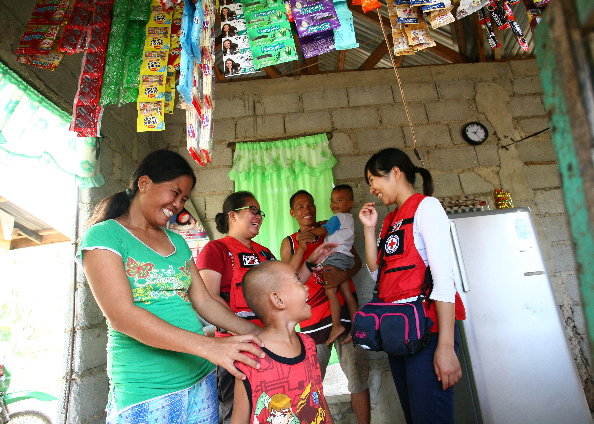

About
the Community Trust Index
Why Trust Matters in Humanitarian Action?
Trust is criticalfor achieving impact inRed Cross and Red Crescent programsand operations.It is a critical determinant of behaviours.With trust, communities can acceptlifesaving information, accept and uptake recommendedmeasures, provide feedback we need toact upon,and participate in decisions affecting them. Often taken for granted, trust is not static and must be constantly earned and maintained.It is driven by a solid social contract, which are rules, obligations, norms that bind different people together and influence how they act and behave.
